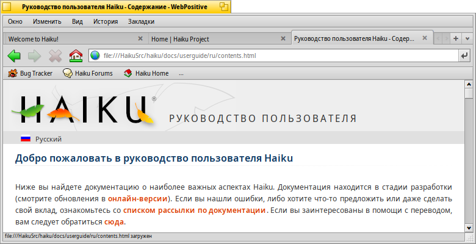
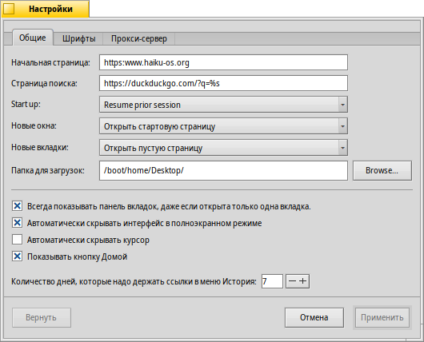
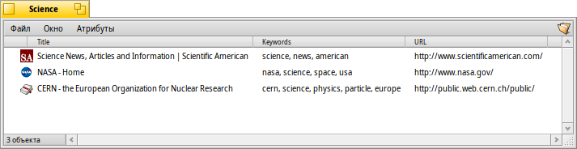
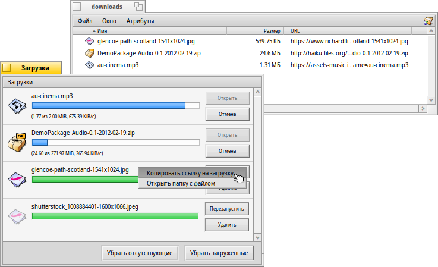

Русский
Русский Français
Français Deutsch
Deutsch Italiano
Italiano Español
Español Svenska
Svenska 日本語
日本語 Українська
Українська 中文 ［中文］
中文 ［中文］ Português
Português English
English WebPositive
WebPositive
| Расположение в Deskbar: | ||
| Расположение в Tracker: | /boot/system/apps/WebPositive | |
| Настройки хранятся по адресу: | ~/config/settings/WebPositive/ - Настройки, куки, кэш и история посещений | |
| ~/config/settings/WebPositive/Bookmarks - Все закладки |
WebPositive, либо сокращенно Web+, является родным браузером Haiku (т.е. написан исключительно под Haiku и не является портированным, как BeZillaBrowser). Вторая часть названия позаимствована у браузера BeOS NetPositive, первая взята из названия движка, на котором работает браузер - WebKit. Это библиотека с открытым исходным кодом для рендеринга HTML, она также лежит в основе других браузеров, таких как Safari и Google Chrome. Благодаря тому, что WebKit постоянно развивается, Web+ сможет идти в ногу с новейшими веб-технологиями.
Интерфейс WebPositive довольно простой: Под меню располагается панель с кнопками навигации: перейти к предыдущей странице или к следующей в вашей истории посещений, остановить загрузку страницы и кнопка перехода на домашнюю страницу.
Далее располагается поле для ввода адреса.
Под этой панелью находится область, где непосредственно отображаются веб-страницы. Вы можете открыть множество страниц одновременно, каждую в своей в кладке
В самом низу окна расположена информационная панель, которая отображает состояние загрузки страницы или адрес ссылки, над которой вы установили указатель мыши. Во время загрузки страницы справа появляется индикатор загрузки.
 Настройки
Настройки
Выбрав в меню пункт появится окно, в котором вам будет предложены основные настройки WebPositive.
Первая кладка отвечает за основные настройки: Какой файл или URL использовать как , что использовать в качестве , выбрать папку , в которую будут сохраняться файлы скачанные из сети Интернет.
Дальше вам предложено выбрать что будет загружено в новом окне и новой вкладке.
Следующие настройки говорят сами за себя:
Настройка Отображать вкладки даже если одна страница открыта (Show tabs if only one page is open).
Автоматически скрывать интерфейс в полно экранном режиме (Auto-hide interface in fullscreen mode).
Автоматически скрывать указатель мыши (Auto-hide mouse pointer).
Отображать кнопку Домашняя страница (Show Home Button).
Хранить историю посещений указанное количество дней (Number of days to keep links in History menu).
Во вкладке Шрифты вы можете выбрать шрифты, используемые для стандартных, с засечками, без засечек и моноширинных шрифтов, а также задать их размеры.
Вкладка Прокси-сервер (Proxy server) отвечает за настройки прокси-сервера.
Просмотр
Если вы до этого пользовались каким-либо браузером, то при работе с WebPositive у вас не возникнет трудностей. Поэтому мы рассмотрим только ключевые особенности.

Новую вкладку можно создать при помощи кнопки +, которая находится в правой части панели вкладок. Также новую вкладку можно открыть дважды кликнув по свободному месту на панели вкладок, если, конечно, сводное место осталось. Если у вас открыто вкладок больше, чем может поместиться на панель, то воспользуйтесь кнопками < > для прокручивания влево и вправо. Используйте кнопку ∨, расположенную справа на панели вкладок, для просмотра списка со всем открытыми вкладками, в котором вы сможете выбрать к какой вкладке перейти.
Щелчок средней кнопкой (колёсиком) мыши по ссылке откроет её в новой вкладке.
В меню для увеличения/уменьшения масштаба страницы, вы можете воспользоваться пунктами меню и . Там также есть пункт меню , который позволит увеличить только текст странице, изображения же и другие элементы останутся с оригинальными размерами.
Если вы активируете в настройках скрывать интерфейс в полноэкранном режиме (Auto-hide interface in fullscreen mode) и перейдёте в полноэкранный режим, то он автоматически скроется через пару секунд. Подведите указатель мыши к верхней части экрана, чтобы интерфейс появился снова.

Во время ввода текста в строке адреса браузер будет предлагать сайты, которые вы до этого посетили и которые совпадают с введённым вами тестом. По этому списку вы можете перемещаться при помощи клавишь ↑ и ↓. Нажми клавишу ENTER и выбранная страница будет загружена.
Введённый текст, который не будет распознан как URL, будет являться ключевыми словами для поиска при помощи Google.Правый щелчок мыши вызывает контекстное меню, какое именно зависит от объекта по которому вы щёлкните.
Выбрав пункт в меню появится панель поиска, в нижней части окна, которая позволяет производить поиск по странице. Совпадения подсвечиваются прямо на странице.
Закладки
В WebPositive закладки представляют собой файлы в папке расположенной по следующему адресу: ~/config/settings/WebPositive/Bookmarks/. При добавлении закладки, в данной папке будет создан новый файл. Для быстрого доступа к данной папке воспользуйтесь пунктом меню .
Вы можете изменить URL, имя, заголовок, ключевые слова вкладки просто изменив атрибуты файла. Убедитесь, что у вас отображаются все атрибуты в Tracker, для этого выберите меню . Для редактирования атрибутов выберите файл нажмите сочетание клавиш ALT E, для перехода к другом атрибуту воспользуйтесь клавишей TAB.
Используя Tracker для управления и навигации по закладкам, вы можете воспользоваться его уникальными особенностями для того чтобы быстро найти то, что ищете.
Активация настройки в панели настроек Tracker, вы можете моментально получить закладки, которые соответствуют вашему запросу. При помощи клавиш↑ и ↓ перемещайтесь по списку, а при нажатии клавиши ENTER откроется сайт.
Для этого все закладки должны храниться по следующему адресу: ~/config/settings/WebPositive/Bookmarks/. Также, заполнение атрибута "ключевые слова" очень помогает при поиске...
Загрузки
Выбрав пункт в меню откроется список всех бывших загрузок, а также текущих:
Прогресс загрузки загружаемых файлов отображается в виде шкалы прогресса также, как при копировании файлов в Tracker, информации о скорости закачки, размере файла и примерном времени загрузки. Расположенные справа кнопки and позволяют произвести одноимённые действия над загружаемыми файлами. Рядом с загруженными файлами отображаются кнопки и , последняя лишь удалит файл из списка загрузок, но не сам файл. Кнопки и удаляют соответствующие файлы из списка загрузок.
Перемещение загружаемого файла в корзину остановит загрузку. Также иконка этого файла станет прозрачной в окне загрузок.
Как правило, WebPositive очень терпимо относится, когда файлами манипулируют при помощи Tracker. Файлы могут быть переименованы или перемещены во время загрузки или после окончания загрузки, все эти изменения будут отражены в окне Загрузки (Downloads).
Вас интересует откуда вы скачали тот или иной файл? Вы можете узнать это, открыв файл при помощи DiskProbe и обратив внимание на атрибут META:url.
Хотите чтобы этот атрибут отображался в Tracker в вашей папке загрузок? Просто скопируйте любую закладку в вашу папку загрузок. Далее выберите в меню выберите этот атрибут, а затем удалите файл закладки.
Горячие клавиши
Далее следует список полезных сочетаний клавиш:
| ALT T | Открыть новую вкладку. | |
| ALT W | Закрыть активную вкладку. | |
| ALT N | Открыть новое окно. | |
| SHIFT ALT W | Закрыть активное окно. | |
| ALT ENTER | Включить\выключить полноэкранный режим. | |
| ALT R или F5 | Обновить страницу. | |
| ALT H | Открыть домашнюю страницу. | |
| ALT D | Отобразить/скрыть окно Загрузки (Downloads). | |
| ALT F | Отобразить панель поиска по странице (скрыть можно при помощи клавиши ESC). | |
| ALT B | Добавить в закладки текущую страницу. | |
| ALT M | Управление вкладками, откроется папка Закладки (Bookmarks). | |
| ALT ← | Открыть предыдущую страницу (если таковая имеется). | |
| ALT → | Открыть следующую страницу (если таковая имеется). |